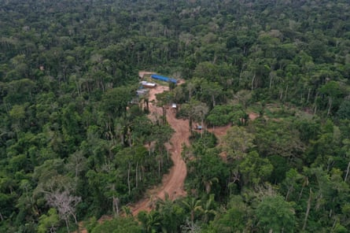
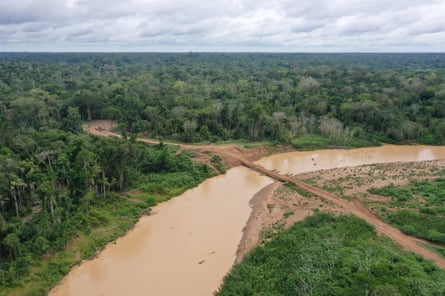
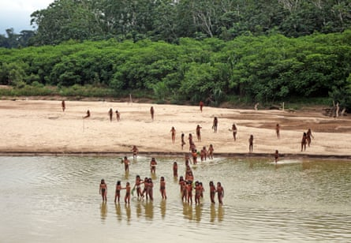

Members of an “uncontacted” Indigenous group used bows and arrows to attack loggers in the Peruvian Amazon in a confrontation that left at least one person injured, according to a local Indigenous organisation.
The incident came just weeks after more than 50 men and boys from the isolated group known as the Mashco Piro made a rare appearance on a beach in the Peruvian Amazon.
Campaigners warn that the Mashco Piro are under siege from logging activity – both illegal and legal – and the latest clashes are likely to increase calls for the government to finally demarcate their ancestral territory after years of conflict.
“This is a permanent emergency,” said Teresa Mayo, Peru researcher for Survival International , an NGO that promotes Indigenous rights, which released images of the Mashco Piro last month. “It is very tense in the zone. Everyone there is afraid,” she said of the area where logging concessions border the 829,941-hectare (2m-acre) Madre de Dios territorial reserve, a protected area where the tribe lives.
The violent clash reportedly occurred in an illegal logging camp outside the reserve along the Pariamanú River on 27 July. However, other details remain unclear amid reports that two other loggers may have lost their lives. It is not known if any of the Mashco Piro were killed in the incident.
The regional Indigenous organization Fenamad, which represents 39 communities in Peru’s Cusco and Madre de Dios regions, reported the incident and said it provided evidence to the Peruvian government.
Logger base located in Mashco Piro’s Indigenous community land.Photograph: Fenamad/Survival International
Peru’s culture ministry, which is responsible for Indigenous rights, did not respond to repeated requests for information.
Mayo said the conflict took place in an area of the rainforest acknowledged by the government to be Mashco Piro territory, but which has not yet been formally protected. It is inside the “expansion area” that Indigenous organizations have demanded be added to the current reserve.
“We have always warned that this could happen,” said Julio Cusurichi, a former president of Fenamad and a committed defender of Indigenous people in isolation and initial contact, who are known by the Spanish acronym PIACI.
“Their land is being invaded by illegal logging and drug-traffickers, so to save their lives they are spreading into other areas,” he said. “The Mashco Piro are facing genocide.”
Aside from the threat of violence, isolated people have very weak immunological defences against illnesses, such as the common cold.
Cusurichi called on Peru’s government to “take immediate action to expand and recognise the [Indigenous] reserve and ensure that there are no deaths”.
Previous encounters between the Mashco Piro and loggers have proved deadly. In August 2022, one logger was killed and another injured by arrows while fishing in an area that borders a timber concession operated Maderera Canales Tahuamanu (MCT). There have been several other previous reports of conflicts.
The killing came amid rising tensions between the logging company and Fenamad, which accused the company of illegally entering the native reserve to log tropical hardwoods in 2022. The company denied the claim and successfully sued the Indigenous organisation for defamation.
Despite its controversial location, the company’s logging concession, held since 2002, is certified by the Forest Stewardship Council (FSC), an international NGO that certifies that timber extraction is sustainable and ethical.
A loggers’ bridge runs through a river in Monte Salvado, in the Madre de Dios province of Peru, on 27 June 2024.Photograph: Fenamad/Survival International
In 2015, Peru’s ministry of culture proposed upgrading the status of the protected area in Madre de Dios from a territorial reserve to an Indigenous reserve, as well as expanding its borders to reflect the true extent of the Mashco Piro territory, but faced strong opposition from logging interests.
The proposed move would have changed its legal status, expanded its borders to include timber concessions, and prohibited logging activity. It was approved by a multisectorial commission in 2016, but inexplicably the new status was not sealed by a presidential decree.
When questioned about its continued certification of the logging company, the FSC said it would conduct a “review of MCT’s compliance with duties to respect and protect the rights of Indigenous Peoples living in self-isolation in the proposed Indigenous territory in Madre de Dios”.
It said the company had “protocols in place to avoid encounters with members of the Mashco Piro”.
The latest tension follows a rash of recent sightings including viral images last month that show dozens of men and boys asking for food from a village of Indigenous Yine people called Monte Salvado, which sits on the opposite bank of Las Piedras River in Peru’s south-eastern Madre de Dios region. The images date from 26 and 27 June.
Members of the Mashco Piro Indigenous community have been sighted coming out of the rainforest more frequently in search of food and moving away from the growing presence of loggers.Photograph: Survival International
The Yine neighbors, who can communicate with the group, refer to them as Nomole, meaning “brothers” , to avoid offending them by calling them Mashco Piro, which means “wild” or “savage” in Yine. The Mashco Piro are believed to have fled into the jungle, shunning outsiders, to escape the brutality of the rubber trade in the late 19th and early 20th century (1880-1914).
Their habitat is rich in prized tropical hardwoods such as mahogany and shihuahuaco . Satellite images show the construction of more than a thousand kilometres of logging roads, built between 2020 and 2023, in timber concessions east of the territorial reserve, according to the Monitoring of the Andean Amazon Project .
Campaigners say the Mashco Piro could be the world’s largest “uncontacted” group, numbering more than 750 people. Peru’s ministry of culture holds a more conservative estimate of around 400 members.
Peru has 25 tribes living in isolation or initial contact, the second highest number in the Amazon, after Brazil. They are currently protected in seven reserves covering more than 4m hectares (9.8m acres) of rainforest.
A 2022 bill in Peru’s Congress that looked to strip uncontacted Indigenous people of lands and protections was officially scrapped in June last year but pressure on their timber and resource-rich territories continues.